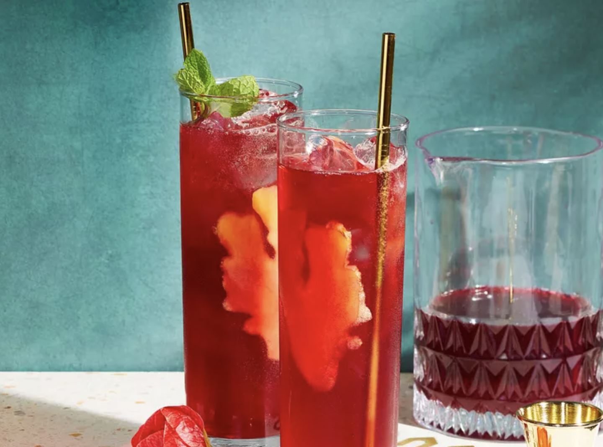

Ginger-Hibiscus Sparkler Recipe

Description:
Bridge tipsy December and dry January with this less-leaded (but no-less-tasty) sipper. Spicy ginger liqueur, nonalcoholic ginger beer, and sweet-tart hibiscus provide all the buzz you need.
Ingredients
- Hibiscus petals
- Fresh lime juice
- Ginger liqueur
- Ginger beer
- Fresh mint
- Fresh ginger
Steps
- Steep hibiscus flowers in boiling water for 5 minutes; strain into a heatproof bowl set in a bowl of ice to speed cooling. Cool completely.
- Transfer to a small pitcher. Stir in lime juice and ginger liqueur. Pour into ice-filled Collins glasses (about 5 oz. per glass) and top each with 1 oz. ginger beer. Garnish with mint sprigs and ginger slices.